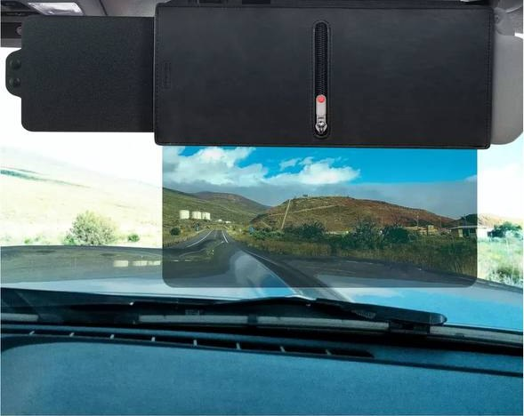
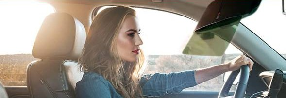
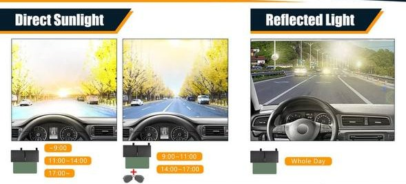
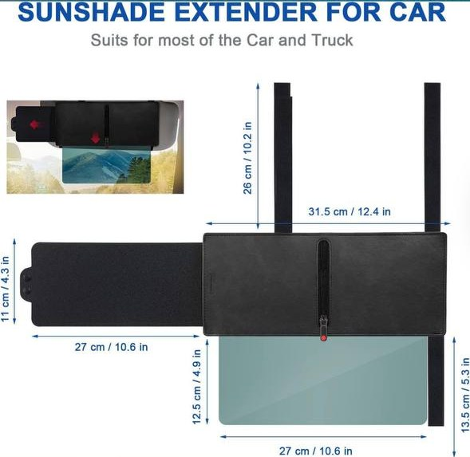

Подовжувач сонцезахисного козирка з поляризаційним екраном. Закриває низьке сонце спереду і збоку, прибирає відблиски від мокрої дороги та машин попереду.


Сонце світить прямо в очі під козирок. Доводиться мружитися і їхати майже наосліп.
Повертаєш козирок до бічного вікна, і лобове скло знову відкрите. Закрити обидва одночасно неможливо.
Мокрий асфальт, скло та хром машин попереду відбивають світло. Очі втомлюються вже за годину.
Кріпиться на ваш штатний козирок двома ременями. У корпусі є кишеня на блискавці для документів, карток чи чеків.
Висувається вбік на 26–27 см і закриває сонце, коли воно світить збоку або в щілину між козирком і стійкою.
Опускається під козирок і працює як сонцезахисні окуляри для всього лобового скла: дорогу видно, а сліпучі відблиски гасяться.

Низьке сонце. Опустіть поляризаційний екран і, якщо сонце збоку, висуньте бічну шторку.
Яскравий день. Екран разом зі звичайними сонцезахисними окулярами дає максимальний комфорт.
Відблиски від дороги після дощу, машин і вітрин гасить поляризаційний екран.

| Основний корпус | 31 × 13,5 см |
| Бічна шторка | 26–27 × 11 см |
| Поляризаційний екран | 26,5–27 × 12 см |
| Ремені кріплення | 25–26 см, обрізаються під козирок |
| Матеріал корпусу | Еко-шкіра |
| Кишеня | На блискавці |
| Сумісність | Більшість легкових авто, SUV, вантажівки |
Прикладіть корпус до штатного козирка водія або пасажира.
Обгорніть ремені навколо козирка і застебніть на липучку.
За потреби обріжте зайву довжину ременів. Готово, можна їхати.
Козирок можна так само легко зняти або перевісити на інше авто.
Так, якщо у вас є штатний відкидний козирок. Ремені регулюються та обрізаються, тому козирок сідає на більшість легкових авто, позашляховиків і вантажівок.
Ні. Поляризаційний екран затемнений і призначений для світлого часу доби. Уночі та в сутінках підніміть його.
Екран прозорий і затемнює лише верхню частину лобового скла, як сонцезахисні окуляри. Коли він не потрібен, просто підніміть його разом з козирком.
Оплата при отриманні у відділенні Нової пошти. Після заявки менеджер зателефонує, щоб уточнити адресу.
Один для водія, другий для пасажира. Або по одному на два авто в родині.
Менеджер зателефонує, підтвердить замовлення та уточнить доставку.
Менеджер зателефонує вам найближчим часом.